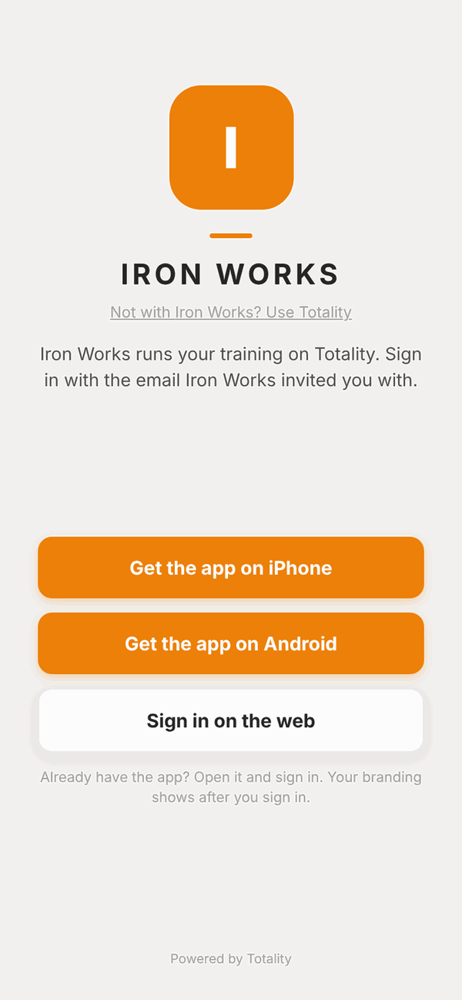

Totality for clients
Install the app
Put Totality on your iPhone, Android phone or computer, and keep it up to date.
Totality works in three places. Pick whichever suits you. You log in with the same email and password on all of them, and your data is the same everywhere.
- iPhone: the Totality app from the App Store.
- Android: the Totality app from Google Play.
- Web: any browser at totalityapp.com.au. You can also add it to your home screen so it opens like an app.

On iPhone#
- Open the App Store on your iPhone.
- Search for Totality for Gyms & Coaches. (The name says gyms and coaches, but it is the same app clients use.)
- Tap Get, then confirm with Face ID, Touch ID or your Apple password.
- Open Totality and tap Log In.
On Android#
- Open the Google Play Store.
- Search for Totality and pick the app made by Totality 360.
- Tap Install.
- Open Totality and tap Log In.
In a web browser#
Go to totalityapp.com.au on any phone, tablet or computer and log in. That's it, there is nothing to install.
Add the web app to your home screen#
This puts a Totality icon on your phone so it opens full screen, like an app.
On iPhone (Safari):
- Open totalityapp.com.au in Safari and log in.
- Tap the Share button (the square with an arrow pointing up).
- Scroll down and tap Add to Home Screen.
- Tap Add.
On Android (Chrome):
- Open totalityapp.com.au in Chrome and log in.
- Tap the menu (the three dots in the top corner).
- Tap Add to Home Screen (on some phones it says Install app).
- Tap Add.
What works where#
Almost everything works the same in all three. A few things need the phone app:
| Feature | iPhone app | Android app | Web |
|---|---|---|---|
| Programmes, workouts, food log, check-ins, messages, bookings | Yes | Yes | Yes |
| Push notifications (messages, class reminders, rest timer alerts) | Yes | Yes | No |
| Barcode scanning with the camera | Yes | Yes | Some browsers. Otherwise type the barcode number |
| Connect Apple Health | Yes | No | No |
| Connect Health Connect | No | Yes | No |
If a wearable is already connected on your phone, its steps, heart rate and sleep still show on the web.
Getting updates#
Most updates arrive by themselves, without the App Store or Play Store. To make sure you have the newest version:
- Open Totality.
- Close it fully. (Swipe it away from your recent apps, or close the browser tab.)
- Open it again.
If you have just installed the app for the first time, do this once straight away so you get the latest version.
Questions#
Which app do I download?
Totality (orange icon). In the App Store it's called Totality for Gyms & Coaches. Clients use the same app as trainers and gyms. It shows you the client screens because of the account you log in with.
Do I need the app, or can I just use the website?
The website at totalityapp.com.au does nearly everything. You need the phone app for push notifications and to connect Apple Health or Health Connect.
Can I use Totality on my phone and my computer at the same time?
Yes. Log in on both with the same email and password. Anything you log on one shows on the other.
Something looks out of date or a button is missing.
Close Totality fully and open it again. That loads the newest version. If it still looks wrong, see Troubleshooting.
Do I need to log in every time?
No. Totality keeps you logged in until you tap Sign Out in Settings.